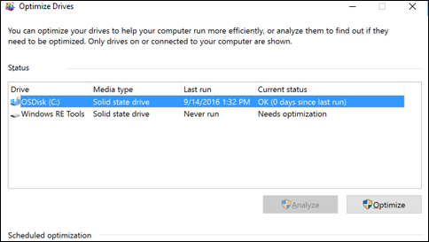

Como Desfragmentar seu Computador Windows 10
Otimizar suas unidades pode ajudar seu computador a funcionar melhor e inicializar mais rapidamente.
- Selecione a barra de pesquisa na barra de tarefas.
- Insira "Defrag" na barra de pesquisa. 
- Selecione "Desfragmentar e otimizar unidades".
- Escolha a unidade de disco que você deseja otimizar.
- Clique no botão "Otimizar".
Windows 10 iniciará o processo de desfragmentação da unidade. Isso pode levar algum tempo, dependendo do tamanho da unidade e da quantidade de fragmentação. Após a conclusão, sua unidade estará otimizada e seu computador deve funcionar de forma mais eficiente.
Lembre-se de que, em unidades de estado sólido (SSD), a desfragmentação tradicional não é necessária e pode ser até prejudicial. O Windows 10 deve reconhecer automaticamente que você está usando um SSD e não realizará a desfragmentação. Portanto, esse processo é mais relevante para discos rígidos tradicionais (HDD).